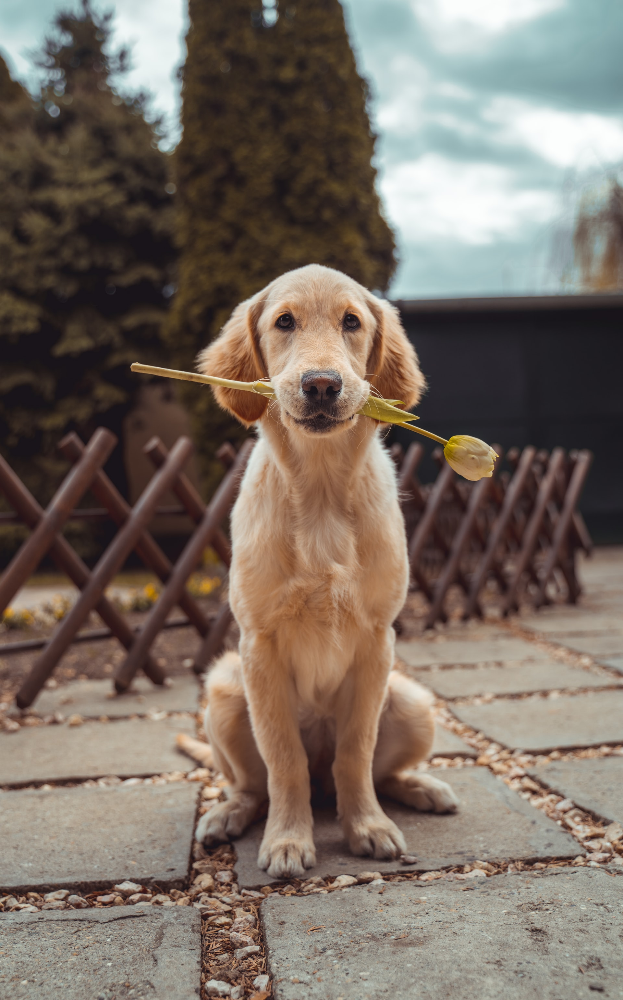
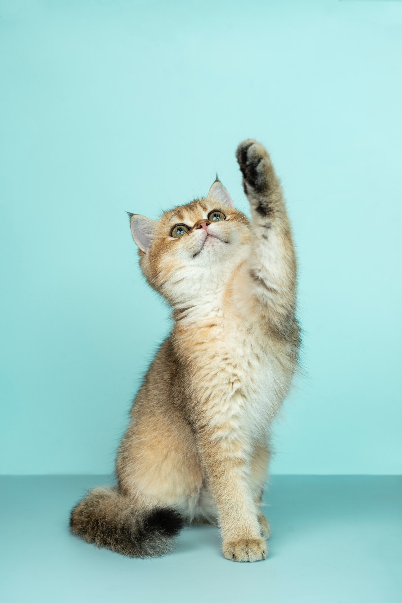
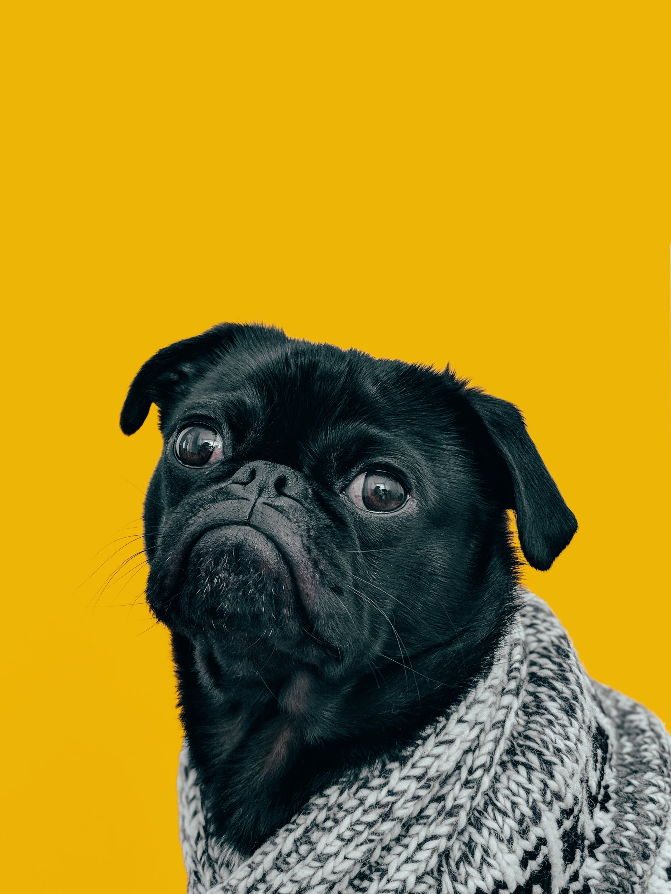

postado 20 Julho 2022
Uma foto que retrata o comportamento entre ambos Comportamento canino é a resposta coordenada internamente de um cão ou grupos de cães domésticos, a estímulos internos e externos...
Ver mais...postado 25 Julho 2022
Os gatos sempre foram muito referenciados na cultura popular. Dentre os antigos povos que reverenciavam os gatos, destacam-se as civilizações egípcia, birmanesa, celta, latina, nórdica e persa.
Ver mais...postado 17 Julho 2022
A origem do cão doméstico não é clara. O cão doméstico é um membro do género Canis (caninos) e é o carnívoro mais abundante.O parente vivo mais próximo do cão é o lobo cinzento e...
Ver mais...Copyright © Jesiel. Todos os direitos reservados.